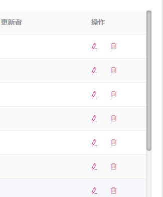

效果如下

直接贴代码了
.sidebar {
z-index: 1024;
position: fixed;
left: 0;
top: 64px;
overflow-y: auto;
overflow-x: hidden;
background-color: #001529;
}
.sidebar::-webkit-scrollbar-track { /* 定义滚动条轨道 内阴影+圆角*/
-webkit-box-shadow: inset 0 0 6px rgba(0, 0, 0, 0.3);
border-radius: 5px;
background-color: #f5f5f5;
}
.sidebar::-webkit-scrollbar { /*滚动条整体样式*/
width: 10px;
background-color: #f5f5f5;
border-radius: 5px;
}
.sidebar::-webkit-scrollbar-thumb { /*滚动条里面小方块*/
border-radius: 5px;
-webkit-box-shadow: inset 0 0 6px rgba(0, 0, 0, 0.3);
background-color: #555;
}